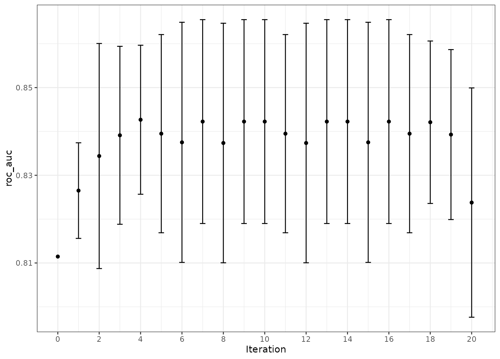

tune_sim_anneal.Rdtune_sim_anneal() uses models to generate new candidate tuning parameter
combinations based on previous results. It uses the generalized simulated
annealing method of Bohachevsky, Johnson, and Stein (1986).
tune_sim_anneal(object, ...) # S3 method for model_spec tune_sim_anneal( object, preprocessor, resamples, ..., iter = 10, param_info = NULL, metrics = NULL, initial = 1, control = control_sim_anneal() ) # S3 method for workflow tune_sim_anneal( object, resamples, ..., iter = 10, param_info = NULL, metrics = NULL, initial = 1, control = control_sim_anneal() )
| object | A |
|---|---|
| ... | Not currently used. |
| preprocessor | A traditional model formula or a recipe created using
|
| resamples | An |
| iter | The maximum number of search iterations. |
| param_info | A |
| metrics | A |
| initial | An initial set of results in a tidy format (as would result
from |
| control | A control object created by |
A tibble of results that mirror those generated by tune_grid().
However, these results contain an .iter column and replicate the rset
object multiple times over iterations (at limited additional memory costs).
Simulated annealing is a global optimization method. For model tuning, it can be used to iteratively search the parameter space for optimal tuning parameter combinations. At each iteration, a new parameter combination is created by perturbing the current parameters in some small way so that they are within a small neighborhood. This new parameter combination is used to fit a model and that model's performance is measured using resample (or a simple validation set).
If the new settings have better results than the current settings, they are accepted and the process continues.
If the new settings has worse performance, a probability threshold is computed for accepting these sub-optimal values. The probability is a function of how sub-optimal the results are as well as how many iterations have elapsed. This is referred to as the "cooling schedule" for the algorithm. If the sub-optimal results are accepted, the next iterations settings are based on these inferior results. Otherwise, new parameter values are generated from the previous iteration's settings.
This process continues for a pre-defined number of iterations and the
overall best settings are recommended for use. The control_sim_anneal()
function can specify the number of iterations without improvement for early
stopping. Also, that function can be used to specify a restart threshold;
if no globally best results have not be discovered within a certain number
if iterations, the process can restart using the last known settings that
globally best.
For each numeric parameter, the range of possible values is known as well
as any transformations. The current values are transformed and scaled to
have values between zero and one (based on the possible range of values). A
candidate set of values that are on a sphere with radius r are generated.
Infeasible values are removed and one value is chosen at random. This value
is back transformed to the original units and scale and are used as the new
settings. The argument radius of control_sim_anneal() controls the
neighborhood size.
For categorical and integer parameters, each is changes with a pre-defined
probability. The flip argument of control_sim_anneal() can be used to
specify this probability. For integer parameters, a nearby integer value is
used.
Simulated annealing search may not be the preferred method when many of the parameters are non-numeric or integers with few unique values. In these cases, it is likely that the same candidate set may be treated more than once.
To determine the probability of accepting a new value, the percent
difference in performance is calculated. If the performance metric is to be
maximized, this would be d = (new-old)/old*100. The probability is
calculated as p = exp(d * coef * iter) were coef is a user-defined
constant that can be used to increase or decrease the probabilities.
The cooling_coef of control_sim_anneal() can be used for this purpose.
The restart counter is reset when a new global best results is found.
The termination counter resets when a new global best is located or when a suboptimal result is improved.
The tune and finetune packages currently parallelize over resamples.
Specifying a parallel back-end will improve the generation of the initial
set of sub-models (if any). Each iteration of the search are also run in
parallel as long as there are 2 or more resamples.
Bohachevsky, Johnson, and Stein (1986) "Generalized Simulated Annealing for Function Optimization", Technometrics, 28:3, 209-217
#> #>#> #> #>#> #> #>library(tune) library(rsample) library(parsnip) library(workflows) library(ggplot2) ## ----------------------------------------------------------------------------- data(two_class_dat, package = "modeldata") set.seed(5046) bt <- bootstraps(two_class_dat, times = 5) ## ----------------------------------------------------------------------------- cart_mod <- decision_tree(cost_complexity = tune(), min_n = tune()) %>% set_engine("rpart") %>% set_mode("classification") ## ----------------------------------------------------------------------------- # For reproducibility, set the seed before running. set.seed(37275) sa_search <- cart_mod %>% tune_sim_anneal(Class ~ ., resamples = bt, iter = 10)#>#>#> ✓ Initialization complete#>#> Optimizing roc_auc#> Initial best: 0.83912#> 1 ♥ new best roc_auc=0.84381 (+/-0.006581)#> 2 ◯ accept suboptimal roc_auc=0.83949 (+/-0.008792)#> 3 + better suboptimal roc_auc=0.84225 (+/-0.009044)#> 4 ◯ accept suboptimal roc_auc=0.83949 (+/-0.008792)#> 5 ◯ accept suboptimal roc_auc=0.83754 (+/-0.008797)#> 6 + better suboptimal roc_auc=0.84267 (+/-0.006609)#> 7 ◯ accept suboptimal roc_auc=0.84114 (+/-0.00662)#> 8 ◯ accept suboptimal roc_auc=0.83805 (+/-0.008188)#> 9 ✖ restart from best roc_auc=0.82235 (+/-0.01177)#> 10 ◯ accept suboptimal roc_auc=0.84381 (+/-0.006581)## ----------------------------------------------------------------------------- # More iterations. `initial` can be any other tune_* object or an integer # (for new values). set.seed(1970) more_search <- cart_mod %>% tune_sim_anneal(Class ~ ., resamples = bt, iter = 10, initial = sa_search)#> Optimizing roc_auc#> Initial best: 0.84381#> Warning: numerical expression has 11 elements: only the first used#> Warning: the condition has length > 1 and only the first element will be used#> 1 ♥ new best roc_auc=0.84267 (+/-0.006609)#> 2 ◯ accept suboptimal roc_auc=0.84267 (+/-0.006609)#> 3 ◯ accept suboptimal roc_auc=0.83912 (+/-0.007893)#> 4 + better suboptimal roc_auc=0.84267 (+/-0.006609)#> 5 ◯ accept suboptimal roc_auc=0.84267 (+/-0.006609)#> 6 ◯ accept suboptimal roc_auc=0.84267 (+/-0.006609)#> 7 + better suboptimal roc_auc=0.84381 (+/-0.006581)#> 8 ◯ accept suboptimal roc_auc=0.83949 (+/-0.008792)#> 9 ✖ restart from best roc_auc=0.83949 (+/-0.008792)#> 10 ◯ accept suboptimal roc_auc=0.84267 (+/-0.006609)# }